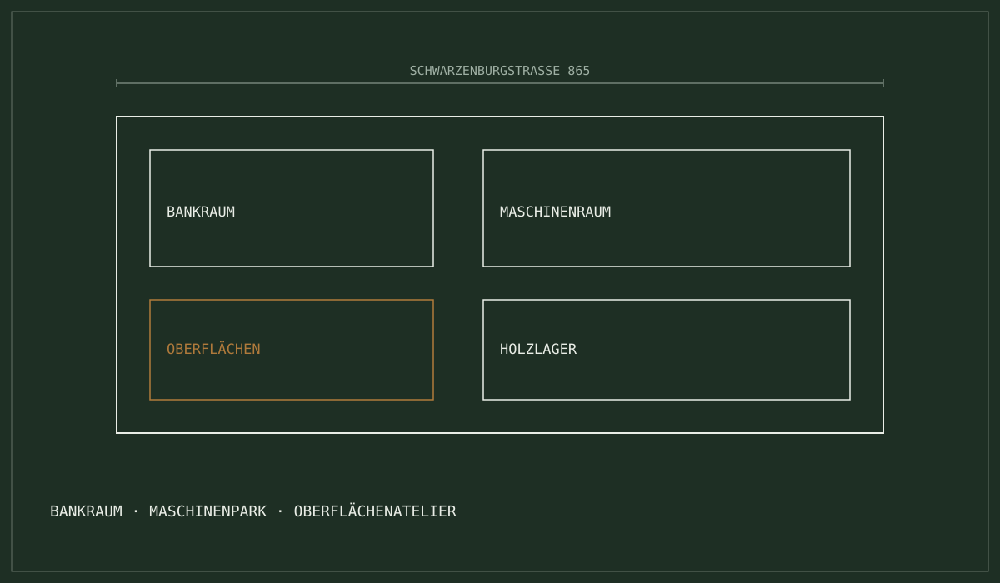

Über uns · Werkstatt-Dokumentation · Traditionsbetrieb seit über 125 Jahren
Holzhandwerk mit
Geschichte.
Seit über
125 Jahren.
Verwurzelt an der Schwarzenburgstrasse in Niederscherli bei Bern verbinden wir unverfälschte Schreinertradition mit moderner Präzisionstechnik.

Handwerk über Generationen
In Niederscherli gefertigt
Zertifizierter Fachpartner
Werkstatt-Einblick & Fertigung
Eigener Bankraum, Maschinenpark & Oberflächen
Der Bankraum: Zentrum der Handarbeit
Hier wird das Holz gesichtet, gefügt, von Hand nachgehobelt und eingepasst. Keine standardisierte Fliessbandarbeit — jedes Stück wird einzeln geprüft.
Moderne Form- & Zuschnittpräzision
Formatkreissägen, Fräs- und Hobelmaschinen für reproduzierbare Passgenauigkeit bis auf den Zehntelmillimeter.
Eigener Spritz- & Lackierraum
Ölen, Wachsen, Mattlackieren oder Beizen: Schutz und Veredelung des Massivholzes direkt im Haus.
Keine anonymen Billigteile
Jede Zarge, jeder Schubkasten wird in Niederscherli gefertigt und vor der Montage vollständig abgenommen. Prüfprotokoll: Jedes Möbelstück wird vor Montage vollständig abgenommen.
Historie // Chronik
Kontinuität an der Schwarzenburgstrasse
Während sich die Welt wandelte, blieb das Fundament der Schreinerei Fritz Gfeller AG unerschüttert: ehrliches Handwerk, persönliche Verantwortung, faire Preise.
Gründung im Berner Mittelland
Seit über 125 Jahren Schreinerhandwerk in der Region — gewachsen aus einer Dorfschreinerei zu einem inhabergeführten Meisterbetrieb.
Tradition von Generation zu Generation
Das Wissen über Holzfeuchte, Faserverläufe, Zinkungen und Schwindmasse wurde über mehr als ein Jahrhundert weitergegeben.
Heute: Moderne Werkstatt & Fritz Gfeller Burgunder
Unter der Führung von Fritz Gfeller Burgunder werden anspruchsvolle Küchenbauten, Innenausbauten, Petwalk-Hundetüren und Reparaturen realisiert.
Wertekanon // Philosophie
Die 3 Grundwerte unserer Werkstatt
Keine leeren Marketingphrasen, sondern die tägliche Richtschnur jedes Hobelzugs.
Massarbeit statt Schnelllebigkeit
Wir verarbeiten Massivholz und Qualitätswerkstoffe nach den Regeln der Handwerkskunst. Wir kaschieren nichts und versprechen nur, was wir halten.
Verbindlich & schweizerisch fair
Unsere Offerten sind nachvollziehbar kalkuliert: Material, Werkstattstunden und Montage werden klar ausgewiesen.
Ein Ansprechpartner für alles
Als Inhaber bürgt Fritz Gfeller Burgunder persönlich für jedes Projekt. Sie sprechen direkt mit dem Meister, nicht mit einem Callcenter.
Führung & personelle Verantwortung
Inhaber-Profil & Werkstatt-Team
Inhaber & Schreinermeister
Fritz Gfeller Burgunder
Persönlicher Ansprechpartner von der ersten Skizze über den Bankraum bis zum Schraubenzieher bei Ihnen zu Hause.
Unser Werkstatt-Team in Niederscherli
In unserer Werkstatt arbeiten qualifizierte Fachkräfte und allenfalls Lernende Hand in Hand mit dem Inhaber.
[PLACEHOLDER — Team-Profil] · Platzhalter für weitere Werkstattmitarbeiter und Schreiner-Lernende. Keine erfundenen Namen · keine künstlichen Stats.
Lage & Anfahrt
Schwarzenburgstrasse 865, Niederscherli
Verkehrsgünstig gelegen im Berner Mittelland zwischen der Stadt Bern und dem Naturpark Gantrisch.
Schreinerei Fritz Gfeller AG
Inhaber: Fritz Gfeller Burgunder
- Adresse
- Schwarzenburgstrasse 865
3145 Niederscherli
Gemeinde Köniz · Kanton Bern - Telefon
- +41 79 230 97 68
- info@schreinergfeller.ch
- Öffnungszeiten
- [PLACEHOLDER — Öffnungszeiten]
Besuche und Materialberatungen gerne nach telefonischer Absprache.
Schreinerei Fritz Gfeller AG
Schwarzenburgstrasse 865, 3145 Niederscherli
[Lageplan Niederscherli] · Region Bern-Mittelland
Externe Karte — öffnet in einem neuen Tab.
Werkstatt-Details // Präzision
Der Maschinenpark im Detail
Wählen Sie einen Bereich an, um die technischen Fertigungsschritte und Kapazitäten einzusehen.
[Bankraum // Manufaktur]
Wo Schreinerkunst vollendet wird
Im Bankraum stehen die klassischen massiven Schreinerhobelbänke. Hier werden Furnierbilder komponiert und Möbel trocken montiert — zur Funktionsprüfung vor der Auslieferung.
- Möbelzusammenbau — Trockenmontage zur Funktionsprüfung vor Auslieferung
- Handschliff — mehrstufiger Schliff bis Korn 320 für samtige Haptik
Technische Spezifikation Bankraum — Hobelbank-Stationen: Massiv Buche geölt · Leimtechnik: D4 wasserfest / Weissleim
Prüfprotokoll: Jedes Möbelstück wird vor Montage vollständig abgenommen.
[Maschinenraum // Zuschnitt]
Format-, Fräs- & Zuschnittpräzision
Formatkreissägen, Fräs- und Hobelmaschinen für reproduzierbare Passgenauigkeit — vom ersten Zuschnitt bis zur fertigen Kante.
- Formatkreissäge — millimetergenauer Zuschnitt von Plattenware
- Fräsmaschinen — Nuten, Profile und Verbindungen
- Hobelmaschinen — planparallele Flächen für Massivholz
[Oberflächenatelier // Lack, Öl & Veredelung]
Schutz und Veredelung direkt im Haus
Ölen, Wachsen, Mattlackieren oder Beizen — die Oberfläche wird im eigenen Spritz- und Lackierraum aufgebracht und kontrolliert.
- Naturöle und Wachse — diffusionsoffen, lebensmittelecht
- Mattlack — kratzfest und pflegeleicht
- Beizen — Farbton nach Muster, im Original begutachtbar
Anfrage in 60 Sekunden
Ihre Schreinerei für das Berner Mittelland
Ob Küchenumbau, Einbauschrank, Haustüre oder Petwalk-Hundetüre: Fritz Gfeller Burgunder berät Sie unverbindlich.